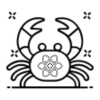

Introduction
NoApi is Rust fullstack web framework combines Axum and React, leveraging Rust Server Functions(RSFs) to enable seamless, type-safe communication between the frontend and backend. Instead of reinventing the frontend or backend, it focuses on improving how they interact by hiding API complexities while maintaining the robustness of Rust and TypeScript. It ensures that function calls between client and server feel natural, eliminating the need for manual API handling. Built as a CLI tool, it streamlines development by generating the necessary bindings and boilerplate, making fullstack development with Rust and React more efficient, intuitive, and secure through end-to-end type safety.
Why this approach?
This tight integration between Rust and TypeScript simplifies development and reduces the risk of runtime errors.
Features include:
- Hot Reload – Instant updates without restarting the server
- Type Syncing – Seamless type safety between frontend & backend
- Rust Server Functions – Call Rust functions directly from the frontend
- File-based Routing – Simple and intuitive route management
- Fullstack (TypeScript + React + Rust + Axum) – Right tool for the right job
Tech Stack
Client: React, TypeScript, TailwindCSS
Server: Axum
License
NoApi is under the MIT License, making it free to use and modify for your own needs.
Installing the CLI tool
To install the CLI tool just run this command
cargo install noapi
Creating A New Project
To create a new project:
- First install the CLI tool
- Then run the commands below in this order
noapi new <PROJECT_NAME>
Install dependencies
noapi install
Start the server
noapi runserver
Running your Project
To run your NoApi project run:
noapi runserver
NB: The dev server has hot reload enabled.
Frontend
All frontend files are located in the /frontend folder. This folder contains your React components, styles, and assets. When you run noapi runserver, the development server supports hot reloading. This means any changes you make to files in the /frontend folder will automatically update in the browser in real time, without requiring a manual refresh or server restart.
The frontend is built with React, so you only need to write standard React code. Create components, use hooks, manage state, and style your app as usual. The setup handles the build process, allowing you to focus solely on development. No additional configuration is needed—just start coding.
NB:
NoApi creates a production build everytime you make changes, so dev errors like unused variables will break your server, so either comment it out or use "_variableName"
Routing
Routing is handled through file-based routing, which simplifies how you define and manage routes. All page files are located in the /frontend/pages folder. Each file or folder in this directory corresponds to a route in your application. For example:
- about.tsx or about/index.tsx will create a route for /about.
- contact.tsx will create a route for /contact.
Dynamic routes are also supported using square brackets. For instance, a file named [id].tsx inside a folder like users will create a dynamic route such as /users/:id. This allows you to capture dynamic segments in the URL and use them in your components.
Routing here is heavily inspired by nextjs and uses react-router to create this magic.
Calling Rust Server Fuctions
With NoApi, calling Rust functions from your frontend is seamless. When you add functions to the src/functions.rs file, NoApi automatically generates TypeScript versions of these functions in the functions.ts file located in your project directory. This allows you to import and use these functions directly in your frontend code.
Heres an example of calling a rust server function:
Rust code( functions.rs )
#![allow(unused)] fn main() { fn get_user(id:u32)->User{ /// } }
Typescript code( your frontend )
import { get_user } from "@functions";
let id: number = 1;
let user: User = await get_user(id);
NoApi handles the conversion between Rust and TypeScript types, ensuring that the data passed between the frontend and backend is type-safe and consistent. This eliminates the need for manual type definitions or additional configuration.
For example, if you define a function in src/functions.rs, you can call it in your React components or other frontend logic as if it were a native TypeScript function.
Why this approach?
This tight integration between Rust and TypeScript simplifies development and reduces the risk of runtime errors.
Backend
NoApi uses Axum, a powerful and efficient web framework for Rust, to run the backend server. The server logic is defined in the src/main.rs file, which serves as the entry point for your backend. Axum is designed for performance and flexibility, making it an excellent choice for building robust APIs and handling HTTP requests.
If you're familiar with Axum, you can customize the server to suit your specific backend needs. The src/main.rs file is where you can middleware, and other server configurations. For example, you can add databases, modify server configuration, or integrate additional middleware for tasks like authentication, logging, or error handling.
NoApi provides a solid foundation, but it doesn't lock you into a rigid structure. If you know enough Axum, you have full control over the backend. This makes it easy to extend the server's functionality or optimize it for your use case.
functions.rs
The src/functions.rs file is the heart of your backend in NoApi. This is where you define your Rust Server Functions (RSFs), which are the functions that handle your backend logic. These functions can perform tasks like processing data, interacting with a database, or executing business logic.
- When you add or modify functions in src/functions.rs, NoApi automatically generates corresponding TypeScript definitions in the functions.ts file. This allows you to call these Rust functions directly from your frontend using TypeScript, with full type safety. For example, if you define a function get_user in src/functions.rs, you can import and use it in your frontend like this:
Rust code( functions.rs )
#![allow(unused)] fn main() { fn get_user(id:u32)->User{ /// } }
Typescript code( your frontend )
import { get_user } from "@functions";
let id: number = 1;
let user: User = await get_user(id);
NoApi also ensures that the types used in your Rust functions are correctly converted to TypeScript types, making communication between the frontend and backend seamless. This eliminates the need for manual type definitions or additional boilerplate code.
Why this approach?
This tight integration between Rust and TypeScript simplifies development and reduces the risk of runtime errors.
Handers
The src/handlers/ folder is a critical part of the NoApi architecture, responsible for managing communication between the frontend and backend. This folder contains auto-generated code that ensures seamless interaction between your Rust backend functions and the TypeScript frontend. Importantly, this folder should not be modified manually by the user.
- Every time you make changes to the src/functions.rs file, NoApi automatically regenerates the contents of the src/handlers/ folder. This ensures that the handlers stay in sync with your backend logic and TypeScript types. If you manually edit files in this folder, your changes will be overwritten during the next regeneration, or worse, they could introduce errors that break your application.
The handlers act as a bridge, translating requests from the frontend into calls to your Rust functions and vice versa. They also handle type conversions between Rust and TypeScript, ensuring that data is correctly passed between the two layers.
Contributors
NoApi is currently created and managed by Kelvin Osei